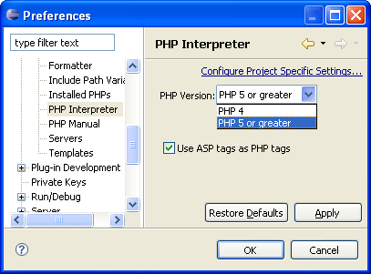

The PHP Interpreter enables you to work with different versions of PHP.
In order to configure the PHP version used by the Eclipse PDT select Window | Preferences | PHP | PHP Interpreter. The Preferences dialog will open.
Select the PHP Version to use.
In order to use ASP tags as PHP tags, place a
check mark in the "Use ASP tags.."
check-box. Code inside ASP tags
(i.e., <% %>) will be
interperted as PHP code.
Click Apply/OK to save and exit to the PDT.

In order to use a different PHP Interpreter for a specific project, select the link labelled "Configure Project Specific Settings".
Select the specific project from the list.
Select the PHP version to use for that specific project.
If you change the interpreter used for an existing project a Confirm Project Rebuild dialog will appear. There are three options:
|
The project will be rebuilt immediately; error parsing will be performed according to the PHP version chosen. |
|
The project will be rebuilt and error parsing performed according to the PHP version chosen after Eclipse is restarted. |
|
No changes will be made to the interpreter. |